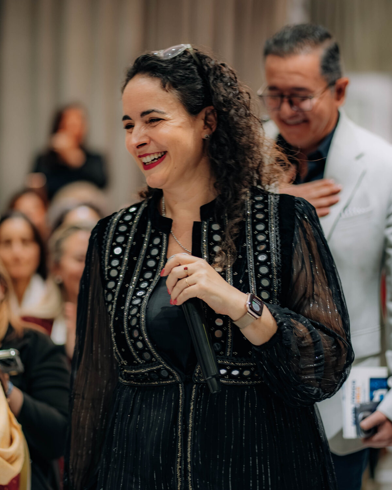

Marcela Viviana Miron no encaja en el estereotipo de la emprendedora del bienestar. No viene del marketing ni de las ventas: viene de los números, de los sistemas, del rigor. Contadora Pública de profesión y Jefa de Sistemas de carrera, decidió sumarle a esa base analítica una misión más grande: transformar vidas desde la ciencia epigenética.

De la estabilidad corporativa a la libertad
Durante años, Marcela tuvo lo que muchos consideran "un buen puesto": estabilidad, sueldo fijo, previsibilidad. Como Contadora Pública primero y Jefa de Sistemas después, construyó una carrera sólida en el mundo corporativo. Pero en algún momento se hizo la pregunta incómoda: ¿es esto lo que quiero para el resto de mi vida?
La respuesta llegó cuando conoció Nu Skin y la ciencia epigenética. No fue amor a primera vista: fue amor a primer análisis. Marcela estudió el modelo con la misma rigurosidad con la que auditaba balances. Miró los números, revisó la trazabilidad de la compañía, verificó los papers científicos. Todo cerraba.
"No vine a vender sueños. Vine a mostrar un camino con datos reales, respaldo científico y un equipo que no te deja solo. Mi formación como contadora y en sistemas me enseñó que todo se puede medir: y los resultados de este modelo se miden."

Su método: estructura + ciencia + corazón
Lo que diferencia a Marcela como líder de equipo es su enfoque sistémico. No improvisa. Cada persona que llega a Piu Bella Spa recibe:
- Un plan de acción medible — con objetivos, plazos y hitos claros. Nada de "vas a lograrlo si querés": vas a lograrlo si seguís estos pasos concretos.
- Mentoría semanal 1 a 1 — encuentros donde revisan avances, corrigen desvíos y ajustan la estrategia.
- Acceso al respaldo científico — charlas con médicos, bioquímicos y especialistas que explican por qué los productos funcionan.
- Estructura financiera — su formación contable le permite enseñar a manejar los ingresos con inteligencia, no con impulsividad.
La diferencia Marcela
No dice "vas a triplicar tus ingresos en 30 días". Dice "en 90 días, si trabajás X horas semanales y seguís este plan, vas a estar en este nivel". Y muestra los datos que respaldan esa afirmación. Sistemática. Concreta. Verificable.
Nu Skin Enterprises INC: la compañía que eligió
Cuando Marcela evaluó a qué compañía sumarse, no se dejó llevar por promesas de charla motivacional. Miró indicadores duros:
- Cotiza en NYSE (Bolsa de Nueva York) — con auditorías públicas anuales y estados financieros disponibles para cualquier persona que quiera revisarlos.
- +40 años de trayectoria global en la industria del bienestar y la belleza.
- +50 mercados activos alrededor del mundo con operaciones reales.
- Investigación científica propia — papers publicados, patentes registradas, laboratorios propios.
- Tecnología ageLOC patentada, basada en 15 años de investigación en genética del envejecimiento.
Esos son los datos por los que Marcela eligió Nu Skin. Y son los mismos datos que hoy le muestra a cada persona que se acerca a Piu Bella Spa. No hay misterio, no hay letra chica: todo está a la vista.
El equipo Piu Bella Spa
Piu Bella Spa no es un equipo de vendedores. Es una comunidad de personas que decidieron construir un proyecto de vida distinto. Bajo el liderazgo de Marcela, encontrás:
- Profesionales de la salud que se sumaron porque valoran el respaldo científico.
- Emprendedoras que buscan flexibilidad sin resignar ingresos.
- Personas sin experiencia previa que en pocos meses lideran sus propias sub-redes.
- Familias completas que trabajan juntas en el proyecto.
Lo que los une: la convicción de que el bienestar personal, financiero y profesional se pueden — y se deben — construir en simultáneo.
Cuatro pilares, una visión
Ciencia Epigenética
La base de todo. Marcela insiste en formar a cada persona del equipo en los fundamentos científicos que respaldan los productos. No para que hagan discursos técnicos, sino para que hablen con conocimiento real.
Libertad de Tiempo
El modelo permite trabajar a tu ritmo, en tus horarios, desde donde quieras. Marcela lo demuestra cada día: es madre, es profesional, es líder, y no eligió una cosa por sobre las otras.
Negocio Global
Trabajar con una compañía que opera en +50 mercados abre puertas que un negocio local no puede abrir. Tu red puede crecer en tu ciudad — o en cualquier ciudad del mundo donde Nu Skin tenga operación.
Crecimiento Sin Límites
No hay techo salarial. No hay jefe que decida cuánto podés ganar. El único límite es la estrategia que vos y tu equipo ejecuten.


¿Querés hablar con Marcela?
Ella misma responde los primeros mensajes. Sin filtros, sin secretarias, sin discursos armados.
Comunicate por WhatsApp →